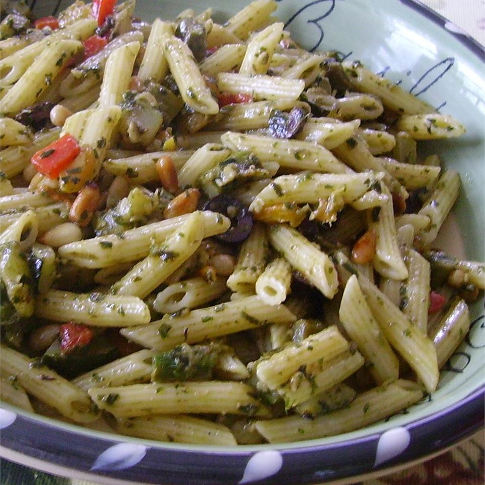

Pesto Penne Primavera

A Delicious Dish!
This pesto primavera is a recipe you can serve hot or cold. A great side dish or main entrée. My kids love this and it's always a hit. You can add poached or grilled chicken. You can also freeze any leftover pesto for later use.
Ingredients
- Pesto
- 1 cup fresh basil leaves
- ½ cup Parmesan cheese
- ¼ cup pine nuts
- ¼ cup olive oil
- 2 tablespoons lemon juice
- 2 cloves garlic, minced
- Pasta
- 4 cups mini penne pasta
- 2 tablespoons olive oil, divided
- ¼ cup pine nuts
- 1 cup chopped asparagus
- ½ cup sliced Kalamata olives
- ½ cup diced roasted red pepper
- ½ cup chopped sun-dried tomatoes
- ½ cup grated Parmesan cheese
Steps
- Make pesto: Combine basil, Parmesan cheese, pine nuts, olive oil, lemon juice, and garlic in a food processor; blend until well combined and consistency is that of fresh pesto.
- Start pasta: Bring a pot of lightly salted water to a boil. Cook penne in boiling water until tender yet firm to the bite, about 11 minutes. Drain and transfer to a large bowl. Pour 1 tablespoon olive oil over the pasta and toss to coat.
- While the pasta is cooking, heat remaining 1 tablespoon olive oil in a large skillet over medium heat. Add pine nuts and toss in hot oil until lightly browned, 1 to 2 minutes; remove to a plate and set aside.
- Add asparagus, zucchini, olives, red pepper, and sun-dried tomatoes to the skillet; cook and stir until hot, 5 to 7 minutes. Stir pine nuts into the vegetable mixture.
- Add cooked pasta and about 1/4 cup of the pesto, or more to your liking, to the skillet and toss to combine.
- Serve in bowls topped with grated Parmesan cheese.